Penalized linear models — Cross-validation & model selection
Quantitative biology and integrative omics
About this lecture
Provisional block
This block (Penalized linear models) is provisional. It may move to a later statistics / machine-learning course. The material stands on its own, but treat the ordering as a working draft, not a contract.
In the penalty units (L1, L2 and elastic-net penalties) we met a knob \(\lambda\) that controls how hard a model is shrunk. This lecture answers two honest questions:
How do we choose \(\lambda\) without just eyeballing it?
How do we report a performance number we can actually trust on new samples?
The single tool for both is cross-validation (CV).
Learning objectives
By the end you should be able to:
explain why training error is optimistic and what overfitting looks like,
describe k-fold cross-validation and what each fold is for,
use cv.glmnet to choose \(\lambda\), and read lambda.min vs lambda.1se,
separate the three roles train / validation / test,
recognise information leakage and know why feature selection must live inside the CV loop,
pick a sensible metric (MSE, deviance, AUC) for a given biological question.
A biology problem: a disease signature
You have expression of 20,000 genes in 80 patients (40 disease, 40 healthy). You want a signature — a small set of genes that predicts disease — and a claim like “our classifier is 92% accurate.”
You fit a lasso logistic model. On your 80 patients it separates the groups almost perfectly.
A collaborator runs it on a new cohort. Accuracy collapses to barely better than a coin flip.
What went wrong? The model learned the noise of these 80 patients, not the biology. And the “92%” was measured on the very data used to fit it — so it was never a real prediction.
This lecture is the machinery that would have caught both problems before publication.
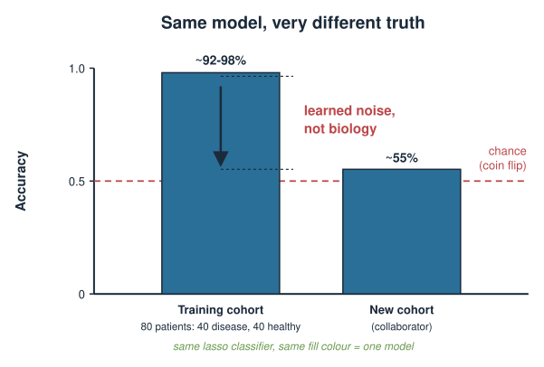
Training error always lies
Fit flexibility (here: less shrinkage, smaller \(\lambda\)) against error:
Training error keeps dropping as the model grows more flexible — it can memorise.
Error on new data drops, bottoms out, then rises again as the model starts fitting noise.
The gap between the two curves is overfitting. Training error is a biased, optimistic estimate of real performance, and the bias is worst exactly when \(p \gg n\).
We cannot see the “new data” curve directly — so we simulate having new data by holding some out. That is cross-validation.
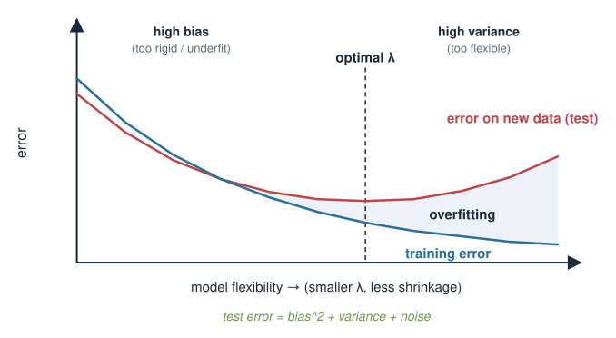
The one honest idea: hold data out
If you want to know how a model does on data it has never seen, then evaluate it on data it has never seen.
Split your samples into a part you fit on and a part you keep hidden.
Fit on the first part only.
Predict the hidden part and measure the error there.
The hidden part stands in for “future patients.” Everything today is a refinement of this one move.
The rule that is never broken: anything the model is scored on must have been invisible during fitting — including during any tuning, scaling, or feature selection.
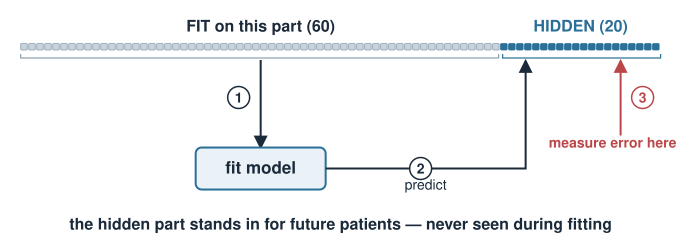
One split is wasteful and noisy
A single train/test split has two problems:
Wasteful: with only 80 patients, setting aside 20 for testing means fitting on just 60. In omics, samples are precious.
Noisy: your performance estimate depends on which 20 landed in the test set. A lucky or unlucky split can move the number by a lot.
Fix: rotate the held-out part so every sample is tested exactly once, and average. That is k-fold cross-validation.
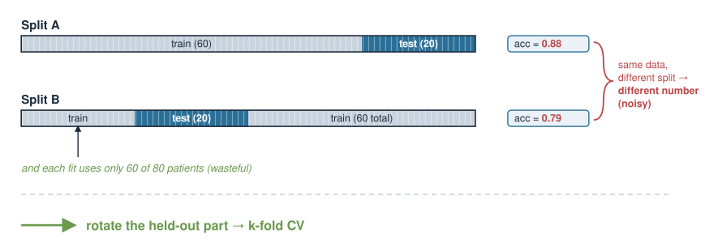
k-fold cross-validation
Split the samples into \(k\) equal folds (typically \(k = 5\) or \(10\)). Then, \(k\) times:
hold out one fold as the validation set,
fit the model on the other \(k-1\) folds,
record the error on the held-out fold.
Average the \(k\) errors → the cross-validated error. Every sample is held out exactly once; every model is trained on a fraction \(\frac{k-1}{k}\) of the data.
\[\text{CV error} = \frac{1}{k}\sum_{f=1}^{k} \text{error on fold } f\]
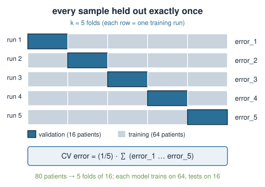
Using CV to choose \(\lambda\)
CV turns “pick \(\lambda\)” into an experiment. Over a grid of candidate \(\lambda\) values:
run k-fold CV at each\(\lambda\),
plot CV error vs \(\lambda\) — it is the U-shaped curve, now measured.
Two standard choices come out:
lambda.min — the \(\lambda\) with the lowest CV error (best raw performance).
lambda.1se — the largest\(\lambda\) (simplest, most-shrunk model) whose CV error is within one standard error of the minimum.
lambda.1se deliberately trades a hair of accuracy for a simpler, more reproducible signature — often the better scientific choice.
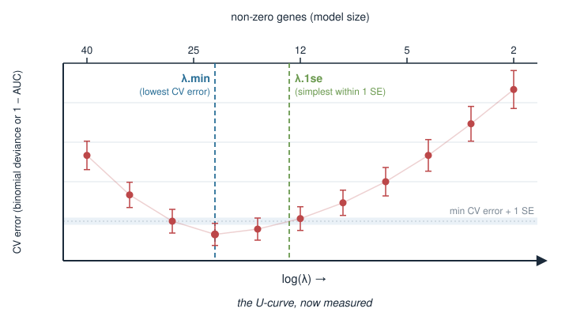
cv.glmnet in R
cv.glmnet does the whole loop for you: it builds the \(\lambda\) grid, runs k-fold CV, and stores both choices.
library(glmnet)x <-as.matrix(expr) # 80 patients x 20000 genesy <- pheno$disease # 0/1 label, length 80set.seed(1) # folds are random -> set a seed for reproducibilitycvfit <-cv.glmnet( x, y,family ="binomial", # logistic model for a 0/1 outcomealpha =1, # 1 = lasso, 0 = ridge, in between = elastic netnfolds =10, # 10-fold CVtype.measure ="auc"# score folds by AUC (see metrics slide))cvfit$lambda.min # best-CV lambdacvfit$lambda.1se # simplest lambda within 1 SE of the bestplot(cvfit) # the CV curve with error bars
Extracting the chosen model
Once CV has picked a \(\lambda\), read off the coefficients and predict:
# sparse coefficient vector at the simpler lambdacoef(cvfit, s ="lambda.1se") # most genes are exactly 0 (lasso)# predicted probabilities for new patientsp_new <-predict(cvfit, newx = x_new,s ="lambda.1se", type ="response")
The non-zero coefficients are your signature — the selected genes.
s = "lambda.1se" tells predict/coef which \(\lambda\) to use.
x_new must have the same genes, in the same order as the training x.
Train / validation / test: three jobs
CV that chooses \(\lambda\) has already used up the held-out folds to make a decision. So its error is a mildly optimistic estimate of the final model. Three distinct roles:
Role
Job
Touched by tuning?
Training
fit coefficients for a given \(\lambda\)
yes
Validation (the CV folds)
choose \(\lambda\)
yes
Test
final, honest performance estimate
no — used once
The test set is locked away until the very end and used exactly once. If you peek at it to make any choice, it stops being a test set.
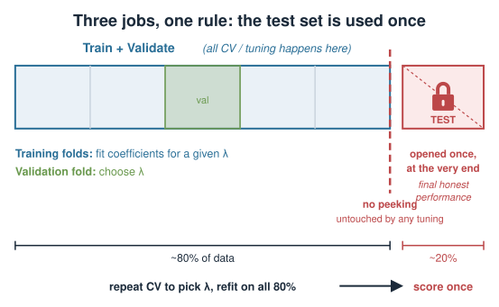
Information leakage: the cardinal sin
Leakage = letting information from the held-out data influence the model. The result is a performance number that is too good and does not replicate.
The classic omics blunder:
Filter 20,000 genes down to the 50 most correlated with the outcome using all 80 patients, then cross-validate on those 50 genes.
The gene filter already looked at the outcome of every patient, including those later “held out.” The folds are no longer naive. Reported accuracy can look great and be completely spurious.
Rule: feature selection is part of the model. It must happen inside each CV fold, on the training portion only.
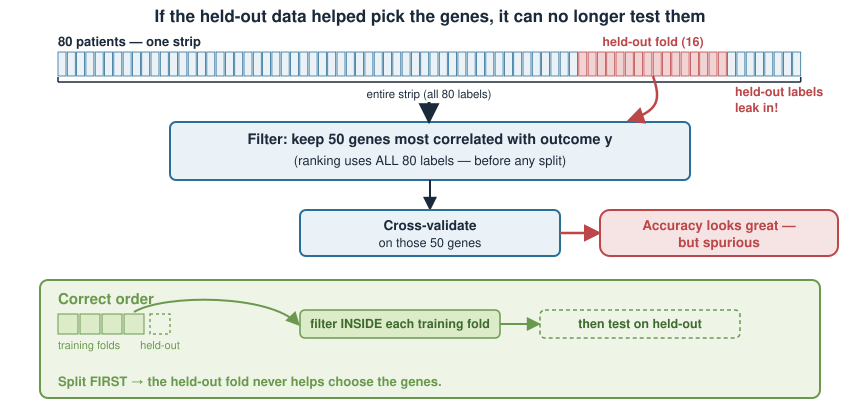
Leakage: wrong vs right
## WRONG — filter uses y from ALL samples, then CVgene_cor <-abs(cor(x, y)) # uses every patient's labelkeep <-order(gene_cor, decreasing =TRUE)[1:50]cv.glmnet(x[, keep], y, family ="binomial") # optimistic, leaked
## RIGHT — the WHOLE pipeline (filter + fit) sits inside CVfolds <-sample(rep(1:10, length.out =nrow(x)))err <-numeric(10)for (f in1:10) { tr <- folds != f; te <- folds == f # split first gc <-abs(cor(x[tr, ], y[tr])) # filter on TRAIN only keep <-order(gc, decreasing =TRUE)[1:50] fit <-glmnet(x[tr, keep], y[tr], family ="binomial") p <-drop(predict(fit, newx = x[te, keep], type ="response")) err[f] <-mean((p - y[te])^2) # held-out Brier score}mean(err) # honest mean CV Brier score
Choosing a metric
“Error” means different things for different outcomes. Match the metric to the biology and the model’s error family:
Outcome
Example
Metric
Continuous
predict age from methylation
MSE / RMSE, \(R^2\)
Count
predict read counts
deviance (Poisson)
Binary
disease vs healthy
AUC, deviance (log-loss), misclassification
MSE\(= \frac{1}{n}\sum (y_i - \hat y_i)^2\) — average squared error; RMSE\(= \sqrt{\text{MSE}}\) is back in the original units.
Deviance generalises MSE to GLMs — the natural loss when the error model is Poisson or binomial.
AUC measures ranking (does the model score sick patients above healthy ones?) and is robust to class imbalance and threshold choice.
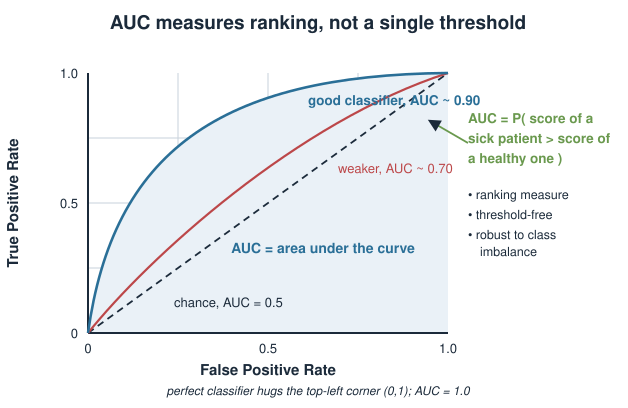
Detecting overfitting in practice
Two cheap diagnostics:
Train vs CV gap. Near-perfect training error with much worse CV error = overfitting. A healthy model has a small gap.
Fold-to-fold spread. If CV error swings wildly between folds, the estimate is unstable — often too few samples, or correlated/grouped samples split across folds.
Responses: increase \(\lambda\) (shrink harder), reduce the feature set honestly, or get more samples.
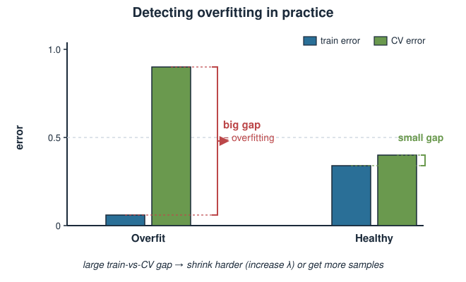
Pitfalls in real omics data
Grouped samples. Cells from the same patient, technical replicates, or batches must stay together in one fold (grouped CV). Splitting them leaks and inflates performance.
Class imbalance. With few cases, use stratified folds so each fold has both classes; prefer AUC over accuracy.
Small \(n\). CV estimates are themselves noisy when \(n\) is small — report them with their spread, do not over-interpret the third decimal.
Batch effects. A model can “predict” disease by detecting the batch it was run in. CV will not catch this if batch is confounded with outcome.
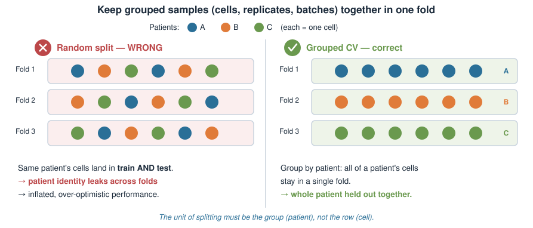
Summary
Idea
Key point
Training error
optimistic — never report it as performance
Hold-out
evaluate only on data unseen during fitting
k-fold CV
rotate folds; every sample tested once; average
Choosing \(\lambda\)
CV error vs \(\lambda\); lambda.min vs lambda.1se
cv.glmnet
family, alpha, nfolds, type.measure; set.seed
Train/val/test
three jobs; the test set is opened once
Leakage
any \(y\)-using step goes inside the CV loop
Metric
MSE/RMSE, deviance, AUC — match to the outcome
Where this leads: these same folds are how one compares lasso vs ridge vs elastic net, and how chemometrics models (PLS / OPLS) are validated. Cross-validation is the common ruler for every penalized and latent-variable model in the course.